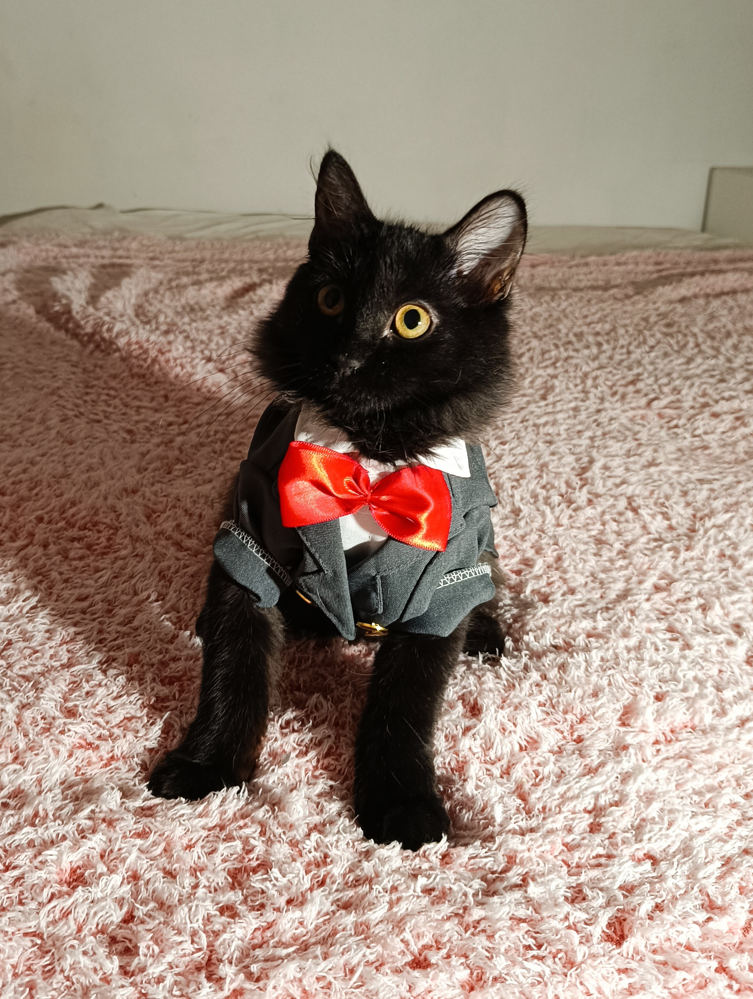

Jhonn Mongo
Santiago, Chile
Catador de Churus | Experto en Control de Plagas | Salto de altura
Apasionado por el pollito en cualquiera de sus formas, croquetas, asado entre otras. Su especialidad en control de plagas son las polillas las cuales le han ayudado en su pasatiempo de salto de altura